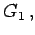
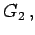
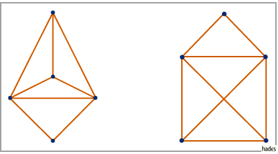
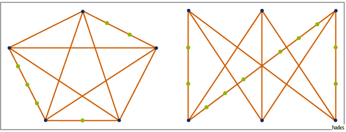

Planare Graphen
In diesem Abschnitt kann man sich auf die Betrachtung ungerichteter Graphen beschränken, weil ein gerichteter Graph genau dann planar ist, wenn der zugehörige ungerichtete Graph planar ist.
- 1. Ebener Graph und planarer Graph:
- Ein ebener Graph ist ein derart in die Ebene gezeichneter Graph, daß die Schnittpunkte der Kanten stets in Knoten des Graphen liegen.
Ein zu einem ebenen Graphen isomorpher Graph heißt planar. Die linke Abbildung zeigt einen ebenen Graphen  die rechte Abbildung einen zu G1 isomorphen Graphen  der nicht eben, wegen der Isomorphie zu G1 aber planar ist.

- 2. Nichtplanarer Graph:
- Der vollständige Graph K5 und der vollständige paare Graph K3,3 sind nichtplanare Graphen.
- 3. Unterteilungen:
- Man erhält eine Unterteilung eines Graphen
 indem man auf Kanten von G Knoten vom Grad 2 einfügt. Jeder Graph ist eine Unterteilung von sich selbst. In den folgenden beiden Abbildungen sind Unterteilungen der Graphen K5 bzw. K3,3 dargestellt.
indem man auf Kanten von G Knoten vom Grad 2 einfügt. Jeder Graph ist eine Unterteilung von sich selbst. In den folgenden beiden Abbildungen sind Unterteilungen der Graphen K5 bzw. K3,3 dargestellt.

- 4. Satz von Kuratowski:
- Ein Graph ist genau dann nichtplanar, wenn er eine Unterteilung des vollständigen paaren Graphen K3,3 oder eine Unterteilung des vollständigen Graphen K5 als Untergraph enthält.